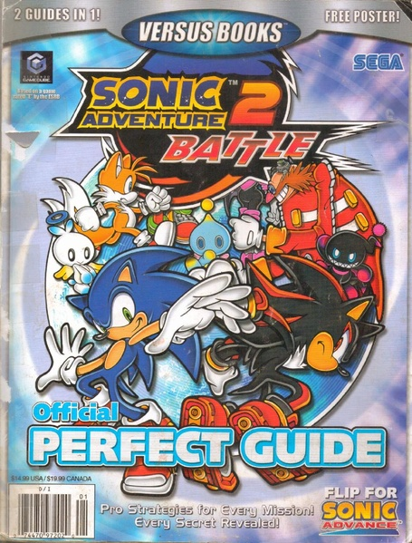
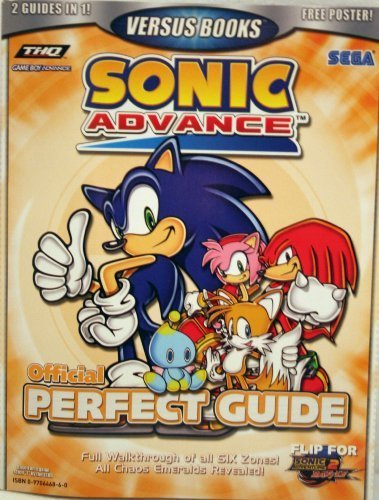

The Internet is Serious Business!
Home > Video Games > GameCube > Sonic Adventure 2: Battle > My Official Perfect Guide to Sonic Adventure 2: Battle
I am referring to this specific guide book for Sonic Adventure 2: Battle published by a company named Versus Books:

Interestingly, the book is actually two separate guides, with the other one being for Sonic Advance, a Game Boy Advance game that is able to connect to Sonic Adventure 2: Battle via the link cable for the two systems; the other side of the book is the front cover for the Sonic Advance guide, which is shown below.

Admittedly, when I was a kid I didn't read much, instead preferring to watch television, play video games, browse the Web, or otherwise entertain myself; back then, nearly all the books I read were those that I had to read for school. This book, however, was one of the major exceptions in those days: it was bought for me after I saw it in the store one day, and afterwards I read it for fun quite frequently—no doubt its smooth, glossy, full-color pages, along with the fact that it described a Sonic the Hedgehog video game, kept me interested. I remember that I actually got the book a while before I got the game itself, and hence for a time I was reading a guide book for a game I did not yet even own, but nevertheless I still very much enjoyed reading through it; the fact that I had spent such a great deal of time reading this book certainly motivated my eventual purchase of the game itself (as well as my later purchase of Sonic Advance).
After I actually got Sonic Adventure 2: Battle (most likely during the end of 2003 or the beginning of 2004), of course, I began to use the book for its intended purpose, and turned to it for walkthroughs, tips, and secrets for whatever part of the game I was playing, but, even then, I still continued to read sections of it purely for fun. For a long time it was my only guide for the game, because, despite already having Internet access in our house, I did not think to search online for more guides and walkthroughs for the game until at least the late 2000s. This was most likely because I found the book to be helpful and thorough enough that I didn't feel the need to look for anything else; it provided me much assistance with boss battles and raising Chao in particular.
My copy has become quite worn over the years, with ripped covers and creased and detached pages, and I must handle it with some care now. Despite the existence of many other online guides and walkthroughs, over the years I still continued to use this book as my primary source of knowledge and help for Sonic Adventure 2: Battle; to turn to some other source would have just felt too strange to me.
For those interested, both the Sonic Adventure 2: Battle guide and the Sonic Advance guide of this book are available in full at the Internet Archive.


 All written materials on this Web site are my own, and all are released under the Do What the Fuck You Want to Public License Version 2.
All written materials on this Web site are my own, and all are released under the Do What the Fuck You Want to Public License Version 2.
This page last modified on 28 March 2021.